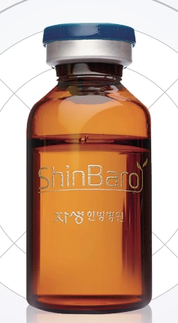

신바로약침의 이해
신바로약침은 신바로한약을 정제·추출해 만든 경혈주입용 한약입니다. 한약과 침의 작용을 함께 활용하며 스테로이드 성분을 사용하지 않는 치료로 소개됩니다.

자생약침의 특징
- 한약재 추출물을 통증 부위에 직접 투여
- 뭉치고 굳은 근육의 이완
- 기혈의 원활한 순환 촉진
- 염증 억제를 통한 통증 감소
- 근육·인대 등 척추 주변 조직 강화
조제와 품질관리
환자별 처방에 맞춰 조제하며, 첨단 시설의 위생관리와 무균 조제 과정을 거칩니다. 약침의 조제와 시험 항목은 자생메디바이오센터에서 확인할 수 있습니다.